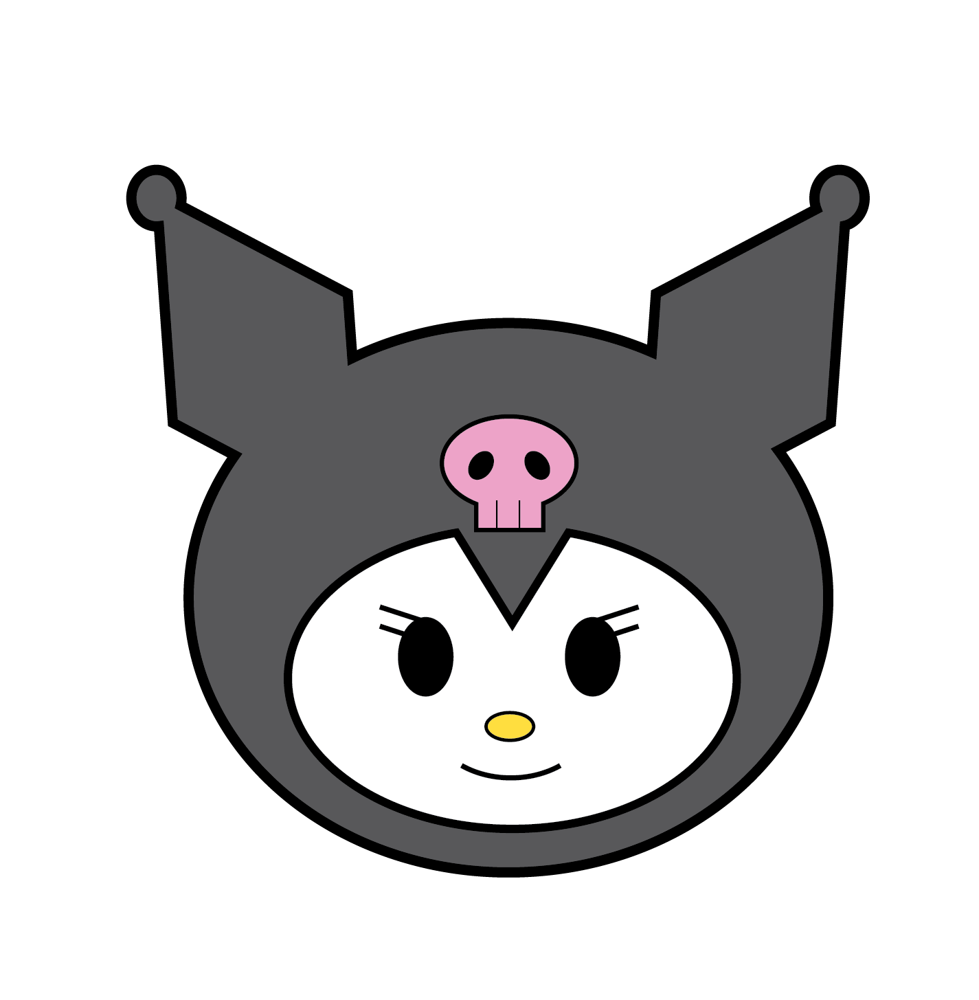
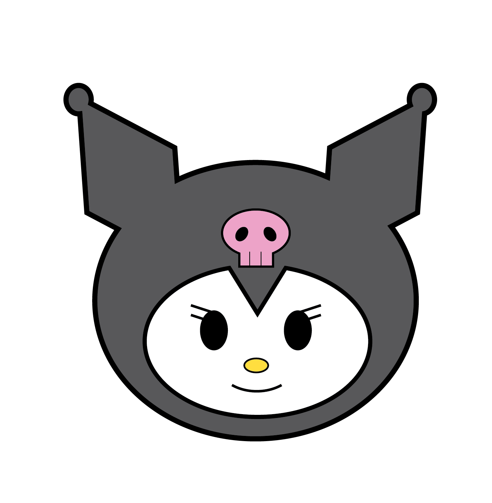

She is a passionate Filipina-American visual designer.
Currently, she is an undergraduate student studying Visual Communication Design at SF State. While being a student, she works part-time for the Center of Global Engagement department of SF State, helping guide international students in their journey of studying in the States.
Their design inspiration and solutions stem from influences within their own cultural heritage and personal upbringing. Filipino heritage is centered around the idea of community, and within her design choices, she create with this intention in mind.
Their design is formed around inclusivity, form and aesthetic appeal, and user functionality. She values teamwork and believes open communication to be a mandatory principle, not only within
design but throughout one's personal life. As creativity flourishes within the mind, it is only further expedited and enhanced when working with others.
Practicing intentionality helps to drive these skills, as evidenced in the colorful and vivid persona found within her design work. In their brand design work, inspiration can be seen
from forms of both a natural and digital space, such as the curvatures and shaping of natural organic elements blended with abstract art qualities. When she is not busy creating,
she focuses on other mediums of creativity, with many being musically-oriented activities. Within the musical world, one must balance various elements such as tempo/rhythm,
knowledge of material, and memorization skills. These features are parallel to the design world as one must be versed in multiple foundations, whether it be knowledge of workspaces,
visual skills, or other.. As Kayla continues along her design journey, she is confident that she will be led to a richer understanding of the world and that will thus discover her personal design "voice."
 
